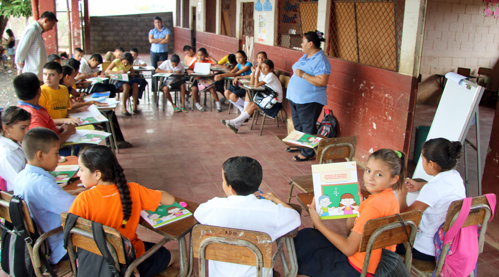

Ihr Engagement
Pate/Patin werden
Übernehmen Sie ab einem Franken pro Tag eine Patenschaft. Damit wenden Sie extrem leidvolle Kinderschicksale zum Besseren oder verhelfen Jugendlichen zu Bildung und somit zu Chancengleichheit. Lernen Sie eine neue Kultur kennen Sobald Sie sich als Patin oder Pate angemeldet haben, erhalten Sie denLebenslauf und Fotos Ihres Patenkindes sowie Informationen über das Land und das soziale Umfeld, in dem Ihr Patenkind lebt. Ausserdem informiert Sie DoGood einmal jährlich über die Veränderungen im Leben Ihres Patenkindes und im Alltag der Dorfgemeinschaft. Sie erhalten aktuelle Fotos und einen Projektbericht. Bauen Sie eine persönliche Brieffreundschaft auf. Ihr Patenkind ist BotschafterIn der Projekte von DoGood in seinem Dorf. Wenn Sie ihm Briefe schreiben, können Sie mehr über sein Leben erfahren und ihm auch von Ihnen erzählen! Besuchen Sie Ihr Patenkind vor Ort Durch den persönlichen Kontakt zu Ihrem Patenkind erhalten Sie Einblick in sein Leben und nehmen Anteil am Alltag in einer fremden Kultur. Sie können Ihr Patenkind auch besuchen und vor Ort sehen, was Ihre Spende bewirkt.
Mit einer Spende
Mit Ihrer Spende unterstützt DoGood Kinder, Jugendliche und deren Familien langfristig. Mit monatlichen Beiträgen oder einem einmaligen Betrag erreicht DoGood eine nachhaltige Verbesserung der Lebensumstände vor Ort. «Wir können direkt mitverfolgen, was mit Ihrem und unserem Geld geschieht – das ist sehr motivierend!»
Hier geht's zum Spendenformular
Freiwilligenarbeit
Mit Freiwilligenarbeit engagieren Sie sich mit anderen Freiwilligen für eine gerechtere Welt und werden Sie Botschafter für die Kinderrechte. Werden Sie persönlich aktiv – für die Rechte der Kinder und Jugendliche! Durch ihre sympathischen Aktivitäten sensibilisieren Sie die Bevölkerung und tragen einen Teil der finanziellen Mittel zusammen. DoGood freut sich über jede Art von Unterstützung!
Einsatzmöglichkeiten
Einsatzmöglichkeiten sind z.B. Veranstaltungen organisieren, Verkaufstand betreuen, Sponsoren suchen, Medienkontakte knüpfen, kranke Kinder nach Massongex begleiten, Texte übersetzen, eine Gruppe Gleichgesinnter leiten oder eine eigene Idee umsetzen! Und natürlich haben wir zusammen auch Spass dabei.
Über uns
Wenn wir über Menschen sprechen, die Hunger leiden, über Kinder die nicht in die Schule gehen, über Frauen die nur gehorchen dürfen oder über Bevölkerungen, die von Krankheiten befallen und dezimiert werden, dann sprechen wir nie von unvermeidbaren Schicksalsschlägen. Wir sprechen immer von verletzten Rechten, von Ungerechtigkeit, von präzisen Verantwortungen der Regierungen und der multinationalen Konzerne. Und genau aus diesem Grund glauben wir, dass Armut besiegt werden kann. Die Schlagworte in unserer Arbeit sind Nahrung und Trinkwasser, Bildung und Gesundheit. DoGood ist ein konfessionell und politisch unabhängiges Hilfswerk, das sich weltweit für benachteiligte Kinder und ihre Familien stark macht. Wir arbeiten in Lateinamerika und unser oberstes Ziel all unserer Projekte ist es, die Lebensbedingungen benachteiligter Kinder und ihrer Familien dauerhaft zu verbessern.
Unsere Mission
Kinder
Kinder sind die schwächsten Glieder unserer Gesellschaft, darum setzen wir alles daran ihnen nachhaltig zu helfen.
Bewusstsein
Schaffen eines Bewusstseins für die Probleme der Kinder in Afrika, welches uns hilft, unsere Ziele umzusetzen und die Bereitschaft der Öffentlichkeit für ein Engagement und Spenden fördert.
Projekte
Wir setzen unsere geplanten Projekte unbürokratisch, schnell und seriös um. Wir überwachen vor Ort kontinuierlich die Entwicklung sowie den aktuellen Stand der Projektarbeiten. Erfahren Sie mehr.
Finanzielle Mittel
Wir gehen sorgfältig mit den uns anvertrauten monetären Mitteln um und verwenden diese gezielt für unsere Projekte. Wir arbeiten mit privaten Spendern sowie Firmen Donatoren und Projektsponsoren (Sachleistungen) zusammen. Wir kommunizieren offen und sind jederzeit transparent. Unsere Jahresrechnungen werden durch eine externe Revisionsfirma geprüft.
Unsere Vision
Armut bekämpfen
Wir wollen helfen, die Armut etwas zu mildern und uns für die Verbesserung der Lebensbedingungen der Kinder in Afrika aktiv einsetzen.
Faire Chancen geben
Wir wollen Kindern, welche ohne Eltern aufwachsen, eine faire Chance auf Bildung, Ernährung und Unterkunft geben.
Wir möchten uns in einer Welt der Globalisierung und Gewinnmaximierung für Menschen einsetzen, welche daran nicht partizipieren können. Wir möchten jungen Menschen nachhaltige Perspektiven geben. DoGood und helfen auch Sie mit und Spenden Sie noch heute!